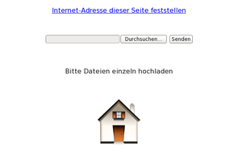
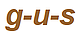

Heimnetzwerk
Zum Verständnis dieses Artikels sind folgende Seiten hilfreich:
Ein Terminal öffnen, optional
Einen Editor öffnen, optional
Mit Root-Rechten arbeiten, optional
Heimnetzwerk – was ist damit gemeint? Die Antwort kann sehr unterschiedlich ausfallen. Daher ist dieser Artikel nach verschiedenen Anwendungsszenarien strukturiert, die im Folgenden kurz beschrieben werden. Jeder dieser Abschnitte ist unabhängig von den anderen gehalten, so dass man nicht den ganzen Artikel lesen muss, wenn einen nur ein bestimmtes Szenario interessiert. Ausnahme: Der Abschnitt Zugriff auf Freigaben am Ende des Artikels wird in fast allen Fällen benötigt.
Ein Anwender möchte vielleicht nur gelegentlich ein paar Dateien auf das Laptop eines Freundes überspielen.
Ein anderer möchte gelegentlich und vorübergehend einzelne Ordner oder Dateien für den Zugriff von anderen Rechnern aus freigeben.
Ein dritter zieht es vor, sich zu Hause einen ständig verfügbaren zentralen Heimserver einzurichten, auf dem sich Musik, Bilder, Filme usw. befinden.
Man besitzt selbst mehrere Rechner und möchte von jedem Rechner aus auf Linux-Rechner möglichst umfassend zugreifen können.
Oder wie wäre es mit einer LAN-Party und der Möglichkeit, in der Gruppe – natürlich nur korrekt lizenzierte – Kunst auszutauschen?
Bei Bedarf ist auch der Fernzugriff auf Windows-Rechner via rdesktop möglich.
So vielfältig wie die Anforderungen, die an ein Heimnetzwerk gestellt werden, sind auch die Möglichkeiten, die Linux dafür bietet. Wer nur zwei Rechner ohne Router oder Switch vernetzen möchte, liest die Artikel PC-Direktverbindung per Netzwerk-Kabel oder PC-Direktverbindung per WLAN.
Achtung!
Dieser Artikel kann nur einige einfache Wege aufzeigen, um mit Ubuntu ein kleines Heimnetzwerk mit wenigen Teilnehmern einzurichten. Dabei spielen Fragen der Sicherheit, der Zugriffskontrolle und des Missbrauchsschutzes naturgemäß nicht die gleiche Rolle wie bei professionellen Netzwerken. Die Vorschläge sind ausdrücklich nicht für Netzwerke mit sensiblen Daten gedacht oder Netzwerke, die ungeschützt gegenüber dem Internet sind!
Hinweis:
Im Folgenden wird der Rechner, auf dem Dateien freigegeben werden, mit Server und der Rechner, von dem aus auf die Freigaben zugegriffen wird, mit Client bezeichnet.
Allgemeine Voraussetzungen¶
Zunächst muss sichergestellt sein, dass die einzelnen Rechner einander ansprechen können. Bei Rechnern, die einen gemeinsamen Internet-Zugang mit einem Router nutzen, ist dies üblicherweise kein Problem. Für andere Konstellationen und bei Problemen siehe Installation/Netzwerk und Internet und Netzwerk.
Die einfachste Art, die Netzwerk-Verbindung zu prüfen, ist der Befehl ping.
Avahi - einstecken und loslegen¶
Der kleine Wollmaki macht's möglich. Er symbolisiert den Avahi-Dämon, ein Dienstprogramm, das es anderen Anwendungen gestattet, ihre Dienste ohne besondere Konfiguration im Netz bereitzustellen. Avahi ist fester Bestandteil von Ubuntu und wird automatisch mit installiert. Auch die FTP-Server vsftpd und ProFTPD (s.u.) machen ebenso wie das virtuelle Dateisystem GVFS von Avahi Gebrauch. Avahi ist wie Apples Bonjour eine Implementation von Zeroconf.
Meistens arbeitet Avahi im Hintergrund (d.h. für den Anwender unsichtbar). Fortgeschrittene Anwender können aber Avahi auch ihren speziellen Bedürfnissen entsprechend konfigurieren oder einzelne Funktionen von Avahi (z.B. das Durchsuchen eines Netzwerkes) für sich ausführen. Hierzu nötige Pakete können aus den Paketquellen zusätzlich installiert werden. Näheres siehe Avahi.
Namensauflösung¶
Normalerweise wird ein Server über seine IP-Adresse angesprochen. Oftmals ist es lästig, diese zu ermitteln. Avahi kann in einfachen Netzen dem Rechner-Namen die jeweilige IP zuordnen. Deshalb kann man statt der IP des Rechners jeweils auch den Rechnernamen mit dem Zusatz .local angeben.
Hinweis:
Im Folgenden steht <Server> entweder für die IP des Servers oder auch - dank Avahi - für die Kombination Rechnername.local.
Dateien versenden¶
Manchmal möchte man einfach nur einzelne Dateien oder Ordner an einen anderen Rechner im lokalen Netz versenden, bspw. an den Laptop eines Besuchers, an einen Arbeitskollegen, etc. Dazu gibt es verschiedene Möglichkeiten.
Kurznachrichtenprogramme¶
Viele Instant Messenger wie z.B. Pidgin, Empathy, KDE-Telepathy, Kopete, Gajim, Apples iChat oder der Windows-Multiprotokoll-Messenger Miranda (per Plugin) beherrschen die Zeroconf-Kommunikation im lokalen Netzwerk, die keinen zentralen Server benötigt. Meist wird das verwendete Protokoll als "Bonjour" bezeichnet, nach der Fa. Apple, dem Erfinder dieser Technik. Unter Linux kommt im Hintergrund allerdings Avahi zum Einsatz.
In der Praxis erstellt man ein neues Konto mit diesem Protokoll. Außer einem (frei wählbaren) Benutzernamen muss nichts weiter einstellt werden. Sofort erscheinen in der Kontaktliste alle anderen aktiven Benutzer im selben Netzwerk, ohne dass man irgendwelche Adressen wissen oder Kontakte hinzufügen muss. Über diese Direktverbindung kann man auch Dateien übertragen.
Eine Sonderrolle spielt der plattformunabhängige Messenger BeeBEEP. Dieser ist von vornherein auf die Kommunikation in lokalen Netzwerken ausgelegt bzw. darauf beschränkt. Neben der Chat-Funktion können auch Dateien versendet oder freigegeben werden.
Weitere Programme¶
Noch einfacher zu bedienen, wenn es nicht ums Chatten, sondern nur um Dateiübertragung geht, sind Transfer On LAN (auf Java basierend), NitroShare und Dukto. Alle drei Programme können plattformübergreifend und damit auch unter Windows eingesetzt werden. Eine weitere Alternative ist das Versenden direkt im Browser mithilfe von WebRTC.
Einzelne Verzeichnisse freigeben¶
Hier geht es darum, Ordner und Dateien möglichst schnell und einfach freizugeben, und die Freigaben danach auch ebenso schnell wieder deaktivieren zu können.
net usershare - „Samba für jedermann“¶
Für viele Zwecke ist Samba unnötig kompliziert. Die Entwickler von Samba haben dieses Problem erkannt. Sie stellen deshalb seit Samba 3.0.23 das Tool net usershare zur Verfügung, mit dem einfache Benutzer ohne Root-Rechte und ohne Bearbeiten der Konfigurationsdatei smb.conf ihre eigenen Dateien mit einer eingeschränkten Auswahl an Optionen freigeben können. Dieses Samba-Tool ist Standard für die Freigabe von Ordnern und Dateien über GNOME|Unity/Nautilus und MATE/Caja. Da Samba das gleiche Netzwerk-Protokoll cifs verwendet wie Windows, eignen sich Samba und net usershare besonders gut zur Kommunikation mit Windows-Rechnern.
Einrichtung¶
Um net usershare verwenden zu können, muss der betreffende Benutzer in der Gruppe sambashare eingetragen sein. Für den Erstbenutzer ist dies automatisch der Fall; bei weiteren Benutzern kann es nötig werden, den Eintrag von Hand vorzunehmen (bzw. zu löschen, falls der Zugriff unerwünscht ist).
Die Einrichtung von net usershare ist in GNOME, Unity und MATE völlig automatisiert. Beim ersten Versuch, einen Ordner durch Rechtsklick auf das Ordnersymbol und Freigabeoptionen freizugeben, werden nötigenfalls die noch fehlenden Pakete installiert. Öffentliche Freigaben (mit Gast-Zugang) sind damit sofort möglich; für persönliche Freigaben (mit Benutzername und Passwort) ist nur noch ein Eintrag in die Samba-Datenbank mittels system-config-samba oder im Terminal mit
sudo smbpasswd -a <Benutzername>
nötig. Näheres hierzu siehe auch Samba Server GNOME. Die Freigaben werden jeweils im Ordner /var/lib/samba/usershares/ gespeichert.
Möglichkeiten und Einschränkungen¶
Samba verwendet das gleiche Netzwerk-Protokoll cifs (vormals smb) wie Windows. Deshalb fügen sich Samba-Freigaben meist ohne weiteres Zutun auch in Windows-Netzwerke ein, und Windows-Rechner können sofort auf Samba-Freigaben zugreifen.
Hinweis:
Mit der seit Windows 7 bestehenden Option "Heimnetzgruppe" kann Samba nichts anfangen. Für die Kommunikation mittels Samba ist diese deshalb auf dem Windows-Rechner zu deaktivieren.
Das Tool net usershare kann auf demselben Rechner parallel zur administrativen Samba-Verwaltung mittels smb.conf verwendet werden. Dabei ist zu beachten, dass Einstellungen, die der Administrator in smb.conf vornimmt, auch "net usershare" beeinflussen können.
Sicherheit¶
Auf Rechnern mit direktem Zugang zum Internet oder mit der Möglichkeit, sich mit fremden Netzen zu verbinden (Laptops), sollte man grundsätzlich darauf verzichten, den Gast-Zugang zu gestatten. Persönliche Freigaben sind (auch bei net usershare) durch die verschlüsselt übertragenen credentials Benutzername und Samba-Passwort sehr gut gesichert. Eine differenzierte Festlegung der Zugangsrechte für einzelne Benutzer und einzelne Freigaben ist Einträgen in smb.conf (s.u.) vorbehalten.
Netzwerke mit zentralem Heimserver¶
Zur Einrichtung eines ständig verfügbaren Heimnetzwerks, üblicherweise mit einem zentralen Server, muss man sich zwischen Samba und NFS entscheiden. Es ist zwar grundsätzlich möglich, beide Dienste auf demselben Server parallel zu betreiben, doch macht dies wegen der sehr verschiedenen Strukturen die Aufgabe keinesfalls leichter.
"Samba" ist die erste Wahl, wenn entweder Verbindungen mit Windows-Rechnern hergestellt werden sollen, oder wenn Dateien freigegeben werden sollen, die sich auf Partitionen mit Windows-Dateisystemen befinden. Samba kann auch dann die Wahl sein, wenn man eine differenzierte und sichere Authentifikation und Verwaltung der Zugriffsrechte wünscht, ohne hierfür zusätzliche Programme installieren zu müssen.
"NFS" ist in reinen UNIX- und Linux-Netzen Standard; auch mit macOS ist eine Verbindung über NFS möglich. Der Unterbau von NFS ist schlanker als der von Samba, Datentransfer via NFS ist deshalb in der Regel auch fühlbar schneller.
Samba - die kaum mehr überschaubare Vielfalt¶
Samba ist in Linux das weitaus mächtigste Werkzeug zur Einrichtung homogener (mit nur gleichen Betriebssystemen) und heterogener Netzwerke (mit verschiedenen Betriebssystemen). Die Anzahl der in der Konfigurationsdatei /etc/samba/smb.conf einstellbaren Optionen ist überwältigend. Entsprechend zahlreich sind aber auch die Möglichkeiten ungeeigneter oder widersprüchlicher Einstellungen.
Samba-Server¶
Erfahrenen Benutzern ist zu empfehlen, einen zentralen Samba-Heimserver nicht mit "net usershare" (s.o.) einzurichten, sondern die Einstellungen und die einzelnen Freigaben mit dem Tool "system-config-samba" (aus den Paketquellen) oder in einem Terminal mit Root-Rechten in der zentralen Konfigurationsdatei /etc/samba/smb.conf vorzunehmen. Siehe hierzu Samba Server und Samba Server/smb.conf.
Zugriffskontrolle¶
Samba besitzt ein sehr ausgeklügeltes System der Authentifizierung und Zugriffskontrolle. Dabei kann der Zugriff generell für einzelne Clients (Rechner) gestattet oder untersagt werden. Zusätzlich lassen sich noch bei jeder Freigabe die Zugriff individuell für einzelne Benutzer (Personen) festlegen. Da die "credentials" (Benutzername und Passwort) in der Regel verschlüsselt übertragen werden, bietet Samba einen sehr guten Schutz vor unberechtigten Zugriffen.
Wegen des sehr mächtigen Überbaus und des äußerst komplexen Berechtigungs- und Authentifikations-Systems kann Samba vor allem auf Systemen geringer Leistung deutlich langsamer sein als andere Verfahren.
NFS - Standard in UNIX¶
Der Standard für professionelle UNIX- und Linux-Netzwerke ist nach wie vor NFS, obwohl auch Samba seit der Version 2.2.4 mit den cifs-UNIX-Extensions eine vergleichbare Funktionalität bietet. Der Vorteil von NFS ist, dass es von Anfang an gezielt für UNIX-artige Betriebssysteme (dazu gehört Linux) konzipiert wurde, und dass es deshalb auf die Eigenheiten anderer Betriebssysteme keine Rücksicht zu nehmen braucht. NFS verzichtet außerdem auf die in Samba vorhandenen aufwendigen Authentifizierungs-Verfahren. Solche müssen zusätzlich installiert werden, was aber bei Heimnetzwerken kaum einmal nötig sein dürfte. Wegen des schlankeren Überbaus ist NFS meist deutlich schneller als Samba.
NFS-Server¶
GNOME/Nautilus unterstützt die Einrichtung von Freigaben über NFS nicht mehr. Diese müssen in einem Terminal mit Root-Rechten (sudo) durch Bearbeitung der Systemdatei /etc/exports vorgenommen werden. Dies ist hier beschrieben. Im Gegensatz zu GNOME unterstützt KDE nach wie vor neben Samba auch NFS.
Zugriff (Client)¶
Um auf NFS-Freigaben zugreifen zu können, müssen diese in das lokale Dateisystem des Client eingebunden (gemountet) werden. (s.u.). Das für verschiedene andere Dienste geeignete GVFS unterstützt NFS leider nicht.
Möglichkeiten und Einschränkungen¶
NFS wird vor allem dann bevorzugt, wenn Freigaben anderer Linux-Rechner fest in das lokale Dateisystem des Client eingebunden werden sollen. Auch Rechner mit dem Betriebssystem MacOS X lassen sich ohne Zusätze in NFS-Netzwerke einbinden. Für das Einbinden von Windows-Rechnern (nur XP und 2000) in NFS-Netzwerke bietet Microsoft im Paket Windows Services for UNIX ein zusätzlich zu installierendes spezielles Tool an. In Vista ist in den Versionen Ultimate und Enterprise (nur dort, nicht nachrüstbar) eine Unterstützung für NFS vorhanden, die in der Systemsteuerung freigeschaltet werden muss.
Innerhalb von Linux-Netzwerken gibt es mit NFS dann Probleme, wenn sich die Freigaben auf Partitionen mit VFAT-Dateisystemen (FAT32) befinden (auch z.B. USB-Sticks oder externe Laufwerke). Ordner und Dateien auf NTFS-Partitionen können in Ubuntu erst seit der Version 8.10 (Intrepid Ibex) über NFS freigegeben werden.
Sicherheit¶
NFS bietet keine Möglichkeit, den Zugriff serverseitig über Passwörter oder andere Geheimnisse zu beschränken. Besitz- und Zugriffsrechte werden allein über die Benutzer- und Gruppen-Identifikationsnummern bestimmt, die der Client dem Server präsentiert. Das bedeutet, dass jemand, der auf dem Client Root-Rechte besitzt, auf der Freigabe jede beliebige Identität annehmen kann (außer die von root, die standardmäßig gesperrt ist)
Man kann den Zugriff zwar auf bestimmte IP-Adressen von Rechnern beschränken, die man selber administriert oder deren Administratoren man vertraut, aber auch diese kann ein Angreifer leicht fälschen, und die Technik, das zu verhindern, ist in SOHO-Netzen meist nicht verfügbar.
Umfassender Zugriff¶
SSH (SFTP) - professionell und ausbaufähig¶
Der sicherste und vielseitigste Weg, über ein Netzwerk auf einen entfernten Rechner zuzugreifen, ist zweifellos SSH. Auch wenn es sich bei SSH um ein absolut professionelles Werkzeug handelt, gestaltet sich der Einstieg erstaunlich einfach. SSH ist unabhängig von der Desktop-Umgebung und eignet sich auch für die Kommunikation mit anderen Betriebssystemen (auch Windows).
SSH-Server¶
Um einen SSH-Server einzurichten, genügt es, das Paket openssh-server aus den Paketquellen zu installieren; eine Konfiguration ist in der Regel nicht nötig. Das Dienstprogramm openssh-client ist bereits in der Standard-Installation von Ubuntu enthalten, sodass man nach der Installation des Servers sofort eine Verbindung herstellen kann.
Bei einem Heimnetzwerk wird man (zumindest am Anfang) bei weitem nicht alle Möglichkeiten von SSH ausnützen. Doch man hält sich damit alle Möglichkeiten offen, um später auch mit schwierigen Aufgaben wie interaktive Terminal-Sessions, Remote-Administration oder sicheren Verbindungen über unsichere Netze hinweg (Tunnel durch das Internet) fertig zu werden.
SSH und FUSE - Einbinden von externen Blockgeräten¶
Mittels sshfs lassen sich die mit openssh-server entfernten Laufwerke einfach ins eigene System einhängen. Dabei stehen vielfältige Optionen zur Verfügung, inklusive der Verwendung von Public-Keys:.
Mehr Informationen dazu bietet FUSE/sshfs.
SSH - Dateitransfer¶
Über SSH kann man direkt auf alle Dateien des SSH-Servers zugreifen; eine Freigabe von Dateien auf dem Server ist nicht nötig. SSH berücksichtigt jedoch die unter Linux üblichen Datei-Rechte und Gruppenzugehörigkeiten, sodass hierüber der Zugriff effektiv und einfach geregelt werden kann. In GNOME erfolgt der Zugriff wie unten beschrieben mittels GVFS. Die Adresszeile im Nautilus-Fenster lautet:
ssh://SERVER
oder
sftp://SERVER
Die zweite Syntax (sftp://...) lässt sich auch in KDE in Konqueror oder Dolphin verwenden.
Ist dies der erste Versuch eines Zugriffs auf diesen Server, wird noch zur Kontrolle der aus 16 zweistelligen Hexadezimalzahlen bestehende "Fingerprint-Schlüssel" des Servers angezeigt. (Dieser digitale Fingerprint dient der eindeutigen Identifizierung des Servers. Wenn man in unsicheren Netzen sichergehen will, dass kein Angreifer sich in die Verbindung eingeklinkt hat, sollte man diesen wie unter SSH beschrieben überprüfen.)
Nach Eingabe des System-Kennworts wird die Verbindung hergestellt, und man hat Zugriff auf das gesamte Dateisystem des Servers mit den gleichen Rechten, als ob man dort direkt angemeldet wäre.
Die Syntax für den Datei-Zugriff mit Anwendungs-Programmen lautet:
ftp://<IP-DES-SERVERS/DATEI
Ein unabhängig von der jeweiligen grafischen Oberfläche einsetzbarer SSH- und FTP-Client, den es auch für andere Betriebssysteme (auch Windows und Mac OS X) gibt, ist FileZilla und auch das besonders unter Windows-Nutzern verbreitete PuTTY.
SSH – Sicherheit¶
Bei SSH werden alle Daten (auch Benutzername und Passwort) grundsätzlich verschlüsselt übertragen. Die verwendete asymmetrische Verschlüsselung (siehe SSH) bietet nach dem Stand der Technik optimale Sicherheit.
Bei der Konfiguration des Servers können außerdem die Zugriffsrechte auf bestimmte Anwender beschränkt werden. Weitere ergänzende Sicherheitsmaßnahmen sind möglich, wenn man den Zugriff über das lokale Netzwerk hinaus ausdehnen möchte.
FTP mit Zugangsbeschränkung¶
Häufig liest man den Vorschlag, statt der manchmal komplizierten Einrichtung eines Samba-Servers doch einfach einen FTP-Server mit Zugangsbeschränkung einzurichten. In der Tat ist die Installation und die Konfiguration der beiden weit verbreiteten FTP-Server vsftpd und ProFTPD vergleichsweise einfach. Man übersieht dabei aber, dass ein SSH-Server auch nicht schwieriger zu installieren und im Betrieb wesentlich sicherer ist. Die auch auf anderen Plattformen (auch Windows) weit verbreiteten FTP-Clients FileZilla und PuTTY können mit SSH/SFTP genau so gut umgehen wie mit FTP, und in Nautilus erfolgt der Zugriff mit GVFS in genau der gleichen Weise. Die erweiterten Möglichkeiten von SSH (vor allem Remote-Administration) kann FTP nicht bieten.
root-jail¶
Eine Besonderheit der FTP-Server vsftpd und ProFTPD ist das root-jail (von root directory = Wurzelverzeichnis; nicht Benutzer root): Das freigegebene Verzeichnis erscheint auf den Clients als scheinbares Wurzelverzeichnis. Bei FTP mit Zugangsbeschränkung ist dies standardmäßig das Heimverzeichnis des jeweils mit Benutzername und Kennwort angemeldeten Benutzers. Der Zugriff auf Ordner und Dateien außerhalb desselben ist nicht möglich (auch nicht über Symlinks).
Zugriffskontrolle und Sicherheit¶
Trägt man bei vsftpd in einem Editor mit Root-Rechten in der Konfigurationsdatei /etc/vsftpd.conf folgende Zeilen ein (bzw. entfernt man bei diesen das Doppelkreuz am Zeilenanfang),
anonymous_enable=NO local_enable=YES write_enable=YES chroot_local_user=YES
so haben nur persönlich (mit Passwort) angemeldete Benutzer Zugriff auf ihr eigenes Heimverzeichnis. Man beachte aber, dass die Daten (einschließlich Passwort) standardmäßig unverschlüsselt übertragen werden, und dass deshalb bei einer Ausdehnung des Zugriffs über das lokale Netzwerk hinaus größte Vorsicht geboten ist. Da es sich als Beispiel hierbei um die Passwörter des Benutzers handelt, könnte jemand mit diesen Zugangsdaten den Rechner per SSH, VNC oder ähnlichem fernsteuern, sofern diese Dienste installiert und das sich um das gleiche Passwort handelt.
Anschließenden startet man den vsftp Dämon neu:
sudo restart vsftpd
Achtung!
Mit Zugang zu unsicheren Netzen (öffentliche Netzwerke, Internet) können FTP-Server ein erhebliches Sicherheitsrisiko darstellen!
Weitere Anwendungen¶
FTP anonym - geeignet für die LAN-Party¶
Für eine LAN-Party wird wohl niemand den Zugriff zu seinem gesamten Dateisystem über SSH gestatten wollen, und es ist auch mühsam, hierfür Dienste wie Samba oder NFS, die sonst vielleicht anderweitig verwendet werden, eigens neu zu konfigurieren. Hier bietet FTP mit dem anonymen Zugang eine einfache Möglichkeit.
Der Server (hier vsftpd) ist genauso zu installieren wie oben beschrieben. In der Konfigurations-Datei /etc/vsftpd.conf sind folgende Einstellungen sinnvoll:
anonymous_enable=YES local_enable=NO write_enable=YES anon_upload_enable=YES anon_other_write_enable=YES anon_mkdir_write_enable=YES anon_world_readable_only=NO
Damit wird für einen virtuellen Benutzer ftp ein Heimverzeichnis /home/ftp eingerichtet, auf das jedermann ohne Passwort als Gast über FTP zugreifen darf. Dieses Verzeichnis gilt für den Zugriff über FTP als Wurzelverzeichnis ("root jail"); Zugriffe auf Ordner oder Dateien außerhalb desselben sind nicht möglich.
Wegen des root jail ist der für die LAN-Party zugängliche Bereich gut gegen das übrige Dateisystem des Rechners abgeschirmt. Es versteht sich von selbst, dass dies alles nur dann sinnvoll ist, wenn kein direkter Zugang zum Internet besteht. Sonst ist es nicht unwahrscheinlich, dass der Server relativ schnell von ungebetenen Gästen für ihre eigenen, nicht unbedingt legalen Zwecke missbraucht wird. (Z.B. zur Verbreitung von Schwarzkopien oder Kinderpornografie.)
Anschließenden startet man den vsftp Dämon neu:
sudo restart vsftpd

Webserver¶
Einen "echten" Webserver einrichten und pflegen birgt viele Risiken. Es erfordert sehr solide Grundkenntnisse und kann in Arbeit ausarten. Viel praktischer wäre ein Webserver, der sich – nur bei Bedarf – genauso schnell starten wie beenden lässt. Kein Problem mit dem auf Python basierenden SimpleHTTPServer  (bzw. http.server ab Python 3). Python ist in allen Ubuntu-Varianten in der Standardinstallation enthalten. Beispiele [3]:
(bzw. http.server ab Python 3). Python ist in allen Ubuntu-Varianten in der Standardinstallation enthalten. Beispiele [3]:
Python 2.x:
cd ~/Downloads && python -m SimpleHTTPServer 8081
Python 3.x:
cd ~/Downloads && python3 -m http.server 8081
Allerdings fehlt die Möglichkeit, Dateien hochzuladen. Aber auch dieser Wunsch kann erfüllt werden: mit dem ebenfalls in Python programmierten Droopy können einzelne Dateien bequem hochgeladen werden. Beispiel:
python droopy.py -m "Einzelne Dateien hochladen" -d /home/BENUTZERNAME/Downloads 8082
Zur Nutzung ruft man folgende Adressen in einem Webbrowser auf (localhost nur auf dem eigenen Rechner möglich!):
SimpleHTTPServer:
http://Server-IP:8081/oderhttp://localhost:8081/Droopy:
http://Server-IP:8082/oderhttp://localhost:8082/
Um SimpleHTTPServer oder Droopy wieder zu beenden, reicht ein Strg + C auf der Kommandozeile. Weitere Möglichkeiten zeigt der Artikel Instant Webserver.
Achtung!
Sowohl SimpleHTTPServer als auch Droopy bieten keinerlei Mechanismen zur Zugriffskontrolle und sollten daher nur jeweils zeitlich begrenzt zum Einsatz kommen!
Zugriff auf Freigaben¶
GNOME und Unity (GVFS)¶
Für den Zugriff auf Netzwerk-Ressourcen verwenden nicht nur die grafischen Oberflächen GNOME und Unity, sondern inzwischen auch MATE,Xfce und LXDE (nicht aber KDE) standardmäßig auf dem Client das virtuelle Dateisystem GVFS.
Eine separate grafische Oberfläche (Frontend) für das GVFS bietet Gigolo.
Unterstützte Dienste¶
Eine Aufzählung aller von GVFS unterstützten Netzwerk-Dienste erhält man über das Hauptmenü mit "Orte -> Verbindung zu Server -> Dienste-Typ". Dies sind:
SSH
FTP (mit Zugangsbeschränkung)
Öffentliches FTP
Windows-Freigabe (siehe auch Samba Client GNOME)
WebDAV (HTTP)
Bei der (etwas unglücklichen) Bezeichnung "Windows-Freigabe" sind Samba-Freigaben und Windows-kompatible Freigaben anderer Betriebssysteme inbegriffen. Obwohl diese Dienste intern auf völlig unterschiedliche Arten arbeiten, erfolgt der Zugriff auf die Freigaben in GVFS immer nach dem gleichen Schema.
Auf NFS-Freigaben kann über GVFS nicht zugegriffen werden.
Zugriff¶
Der Zugriff auf die Freigaben kann über das Menü mittels "Orte -> Verbindung zu Server -> <jeweiliger Dienst>" erfolgen. Alternativ kann man in der Pfad-Zeile des Dateimanagers (bei Nautilus erreichbar durch Anklicken des Symbols links oben oder Strg + L ) folgenden Eintrag vornehmen:
DIENST://SERVER/FREIGABE
Danach erscheint auf dem Desktop - eventuell nach Abfrage von Benutzername und Kennwort - ein Symbol für einen entsprechenden Netzwerk-Ordner, über den man jederzeit wieder neu zugreifen kann. Wird dieser nicht mehr gebraucht, lässt er sich mittels Rechtsklick und "Datenträger aushängen" wieder entfernen.
Auch über ein Terminal [3] oder in Skripten kann man mittels GVFS auf Freigaben zugreifen. Näheres findet sich im Artikel gvfs-mount.
Syntax und alternativer Zugriff¶
Das GVFS verwendet für den Zugriff standardmäßig eine Syntax folgender Art: smb://… (bzw. ssh://… oder ftp://… ). Die meisten (aber nicht alle) Anwendungsprogramme kommen inzwischen mit dieser Syntax zurecht. Um auch anderen Anwendungsprogrammen den Zugriff zu ermöglichen, die eine Syntax nach den POSIX-Richtlinien verlangen, bietet GVFS noch einen alternativen Zugriff über den Ordner /run/user/BENUTZERNAME/gvfs (ab Ubuntu 12.10) bzw. ~/.gvfs (bis Ubuntu 12.04) im Homeverzeichnis des Benutzers an. Dafür verwendet GVFS das Kernel-Modul FUSE. Deshalb können hiervon nur diejenigen Benutzer Gebrauch machen, die in der Gruppe "fuse" eingetragen sind. Für den Erstbenutzer ist dies automatisch der Fall. Bei weiteren Benutzern kann es nötig werden, den Eintrag von Hand vorzunehmen.
Unabhängig vom jeweiligen Netzwerk-Dienst und von der Art des Zugriffs gilt, dass GVFS beim Kopieren die Übertragung von Dateiattributen (vor allem Zeitstempel sowie Besitz- und Zugriffsrechte) nicht unterstützt (Ausnahme: SSH).
Hinweis:
Der alternative Zugriff wurde in Ubuntu 12.10 geändert. Näheres siehe gvfs-mount.
Das Netzwerk durchsuchen (Browsen)¶
Weder SSH- noch FTP-Clients können in einem Netzwerk nach verfügbaren Servern suchen ("browse"). Sie können zu diesem Zweck aber durch das kleine Avahi-Programm avahi-discover ergänzt werden.
Samba-Clients können hingegen im Netzwerk browsen. Die gefundenen Server werden nach Domänen oder Arbeitsgruppen gegliedert angezeigt, wenn man im Menü folgenden Eintrag aufruft:
"Orte -> Netzwerk" oder
"Gehe zu -> Netzwerk (durchsuchen)"
Klickt man dort eines der Symbole an, wird die Verbindung über GVFS hergestellt, bei Freigaben ohne Gast-Zugang nach Eingabe von Benutzername und Samba-Passwort. Siehe hierzu auch Samba Client GNOME.
Hinweis:
Für den Zugriff auf dem Client spielt es keine Rolle, ob die Freigaben mit net usershare oder über smb.conf erstellt wurden. Da Samba Server-Namen auch ohne Avahi selbst auflösen kann, darf bei Samba der Namenszusatz .local fehlen.
KDE (Kubuntu)¶
KDE bietet über die KIO-Slaves transparenten Zugriff auf Netzwerkressourcen für alle KDE Anwendungen. Für die Anwendung gibt es keinen Unterschied zwischen einer lokalen und einer entfernten Datei - beide werden über KIO-Slaves angesprochen. Jedoch wird eine entfernte Ressource natürlich nicht im lokalen Dateisystem eingebunden und kann also nicht über den Verzeichnisbaum erreicht werden.
KDE bietet über die Orte jedoch eine einfache Möglichkeit, Verknüpfungen zu entfernten Ressourcen anzulegen. Dazu kann man in Dolphin oder Konqueror den Ort Netzwerk bzw. die Adresse remote:/ auswählen. Hier kann man über den Eintrag Network Services nach über Zeroconf freigegebenen Diensten suchen und über den Eintrag Samba Shares SMB Freigaben finden. Der Eintrag Netzwerkordner hinzufügen startet einen Assistenten um einen neuen Ort anzulegen.
Der Assistent bietet die Möglichkeit, eine Verbindung mit folgenden Protokollen aufzubauen:
Nachdem der Assistent durchgeführt worden ist, erscheint im Ort Netzwerk eine neue Verknüpfung. Diese kann nun wie gewohnt zu den Orten hinzugefügt werden. Generell lässt sich jede über KIO-Slaves ansprechbare Ressource zu den Orten hinzufügen und somit schnell und bequem erreichen. Die verwendete Syntax entspricht der Standard-Syntax von GVFS in GNOME (smb://... usw.). Der Artikel KIO-Slaves listet einige der unterstützten Protokolle auf.
Xfce (Xubuntu)¶
Der Dateimanager Thunar bzw. Xfce/Xubuntu bietet erst ab Ubuntu 11.04 die Möglichkeit, ohne Hilfsprogramme via GVFS auf Netzwerk-Ressourcen zuzugreifen. In älteren Ubuntu-Versionen musste man dazu auf Werkzeuge wie Gigolo ausweichen.
Zum Erstellen von Freigaben ist (immer noch) keine Möglichkeit vorhanden. Persönliche Freigaben müssen mittels net usershare im Terminal [3] erstellt werden. Für systemweite Freigaben eignet sich system-config-samba.
In das lokale Dateisystem einbinden¶
Unabhängig von der jeweiligen grafischen Oberfläche können mit Samba (net usershare oder smb.conf) oder NFS erstellte Freigaben auf dem Client in das lokale Dateisystem eingebunden ("gemountet") werden, sodass sie dort genau wie lokale Dateien behandelt werden. In NFS ist dies sogar die einzige Möglichkeit, auf Freigaben zuzugreifen. Für Samba ist dies ausführlich in Samba Client cifs beschrieben.
Im Gegensatz zum Zugriff über GVFS und KIO werden hier die Dateiattribute (vor allem Zeitstempel, Besitz- und Zugriffsrechte) vollständig übertragen (bei Samba optional). Für SSH bietet das Kernel-Modul FUSE mit sshfs eine ähnliche Möglichkeit.
Sonstiges¶
gnome-user-share¶

Mit nur einem Mausklick soll jedermann über ein Netzwerk oder mittels Bluetooth Dateien freigeben oder auf freigegebene Dateien zugreifen können. Dies verspricht das Werkzeug gnome-user-share für die grafische Oberfläche GNOME. Das Programm kann aus den offiziellen Paketquellen installiert werden. Der verwendete Webserver Apache wird bei der Installation von gnome-user-share nicht mehr (wie früher) automatisch nachinstalliert und konfiguriert. Er muss vielmehr zusätzlich installiert werden. Im Netzwerk ist gnome-user-share weniger flexibel und auch weniger sicher als net usershare. Trotz des ähnlichen Namens hat gnome-user-share mit net usershare bzw. ganz allgemein mit Samba nichts zu tun und ist damit auch nicht kompatibel.
Meiga¶
Meiga bietet eine einfache Oberfläche zur Freigabe von Verzeichnissen über das Web. Für den Zugriff wird lediglich ein Webbrowser benötigt, während auf Freigabe-Seite kein zusätzlicher Webserver benötigt wird. Das Programm kann im Heimnetzwerk und auch über das Internet genutzt werden.
Statt mit Verzeichnissen wie bei Meiga arbeitet Kangee mit Dateien. Ein Zugriff aus dem Internet ist ebenfalls möglich.
Links¶
Intern¶
Avahi - Einfach vernetzen ohne Konfiguration
SSH - Umfassende Darstellung vor allem für Fortgeschrittene
FUSE/sshfs Einbinden externer Freigaben mittels SSH.
FTP - Clients für FTP-Freigaben
gvfs-mount - Zugriff auf verschiedene Netzwerkprotokolle mittels GVFS
Samba: Grundlegende Informationen zu Samba
Samba Server GNOME - Mit GNOME/Unity und Nautilus Samba-Freigaben einrichten. Teilweise auch gültig für Xfce.
Samba Client GNOME - Über GNOME/Unity und Nautilus auf Samba- und Windows-Freigaben zugreifen. Größtenteils auch für Xfce gültig.
net usershare - Persönliche Freigaben mittels Kommandozeile erstellen
NFS - Das Netzwerk-Protokoll für UNIX/Linux
gnome-user-share - einfaches Programm mit graphischer Oberfläche zum Austausch von Dateien über das Heimnetzwerk
Extern¶
Secure Shell - Das Netzwerk-Protokoll SSH
OpenSSH - eine Sammlung offener Computerprogramme zu SSH
Grundlagen Computernetze
 von Prof. Jürgen Plate
von Prof. Jürgen PlateSicherheit in Netzen
von Prof. Jürgen Plate
Netzwerken im 21. Jahrhundert
- Blogbeitrag, 02/2009
- Erstellt mit Inyoka
-
 2004 – 2017 ubuntuusers.de • Einige Rechte vorbehalten
2004 – 2017 ubuntuusers.de • Einige Rechte vorbehalten
Lizenz • Kontakt • Datenschutz • Impressum • Serverstatus -
Serverhousing gespendet von